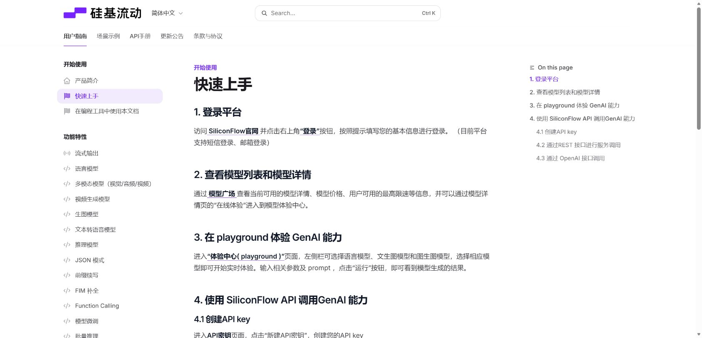
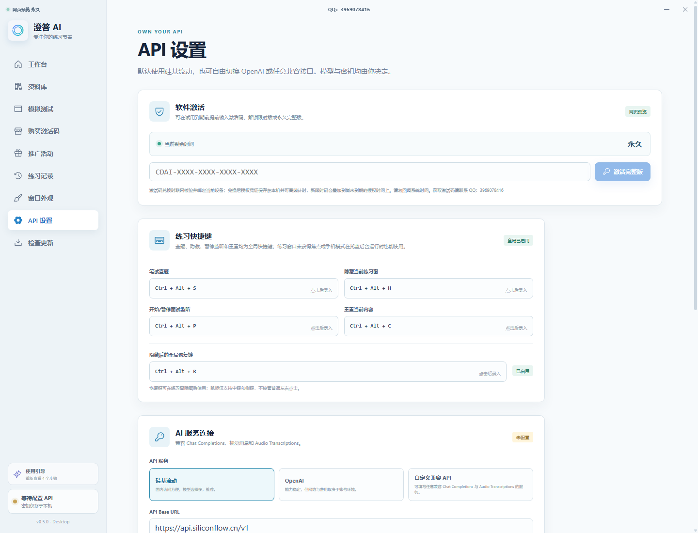
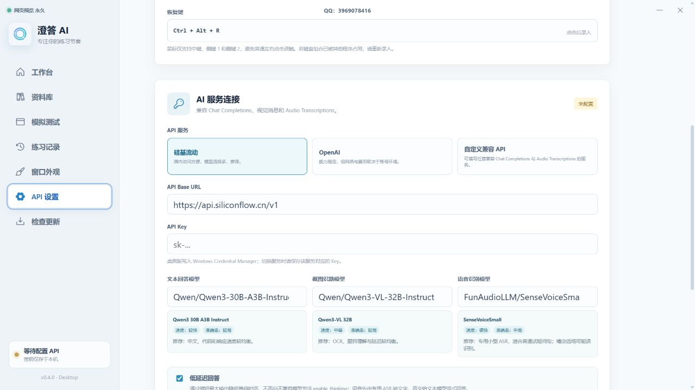

澄答 AI 操作手册
从保留安装包、注册并购买自己的 AI API，到模型选择、资料库、全局快捷键和练习功能的完整图文流程。
适用于 v0.5.7 及以上移动端目录向下滚动查看各章节。
1. 下载、保留并开始使用
Windows 用户推荐下载安装版。由于安装包目前没有商业代码签名，Microsoft Edge 可能显示“通常不会下载”；这不代表文件一定有问题，仍应只从澄答 AI 官方下载页获取，并核对版本。
- 在官方页面点击“Windows 安装包”，等待 Edge 下载完成。
- 如果下载项显示“通常不会下载”，把鼠标移到该下载项，点击右侧三个点按钮。
- 在菜单中点击“保留”。
- 弹出“打开前请确保信任”后，点击“删除”右侧的小箭头，再选择“仍然保留”。
- 下载完成后点击“打开文件”，按安装向导完成安装。
下面三张图按操作顺序排列；点击图片可查看原图。
安全提示只保留从官方发布页下载、文件名和版本正确的安装包。不要关闭 Windows Defender，也不要对来源不明的 EXE 执行上述操作。
安装完成后的顺序
- 首次打开可获得 45 分钟本机试用。
- 按下一章注册硅基流动并自行购买 API 额度；软件激活费用不包含第三方 API 费用。
- 保存 API 配置并测试连接后，再进入笔试或面试练习。
- 需要个人化回答时，在“资料库”导入简历、学校、专业、项目和岗位资料。
2. 硅基流动注册、充值与 API 配置
澄答 AI 不附送 AI 调用额度。你需要注册自己的硅基流动账号、充值并创建 API Key；产生的模型费用由硅基流动从你的账号余额中扣除。
https://api.siliconflow.cn/v1
第一部分：注册并准备 API Key
- 点击上面的注册链接进入硅基流动。页面出现登录/注册入口后，按提示使用手机号或邮箱完成账号登录；验证码、实名认证和协议确认需要由账号本人操作。
- 登录后进入控制台，先查看“模型广场/模型中心”，确认准备使用的模型仍然可用，并查看实时输入、输出价格。
- 进入账户余额或充值页面，按自己的使用量充值。软件激活码与硅基流动余额是两项独立费用。
- 在控制台进入“API 密钥”，点击“新建 API 密钥”。创建后立即复制以 sk- 开头的完整密钥并安全保存。
- 不要把完整 API Key 发给客服、卖家或其他用户，也不要把显示完整 Key 的截图上传到公开网页。密钥泄露后应立即在硅基流动后台删除并重新创建。

第二部分：把 API 填入澄答 AI
- 打开澄答 AI 左侧“API 设置”，向下滚动到“AI 服务连接”。
- API 服务选择“硅基流动”，软件会自动填入 Base URL：https://api.siliconflow.cn/v1。
- 把刚才复制的完整 API Key 粘贴到“API Key”。保存后输入框可能重新显示为 sk-...，这是隐藏密钥的正常表现。
- 文本回答模型用于生成答案；截图识题模型必须支持视觉输入；语音识别模型使用 SenseVoiceSmall 或 TeleSpeechASR。
- 点击“保存配置”，再点击“测试连接”。只有显示连接成功，才进入练习。


不要混用模型截图题必须选择视觉模型；语音识别字段必须填 ASR 模型。模型 ID 要完整复制，少一个字符也可能返回 model not found。API Key 测试失败时依次检查余额、Key、Base URL、模型是否下架以及网络。
3. 模型选择：快速档与质量优先档
下拉列表同时保留日常快速模型和价格更高、能力更强的模型。价格单位为人民币元 / 百万 Tokens，记录日期为 2026-08-27；模型可用性和价格可能随时变化，购买前请再次查看硅基流动模型中心。
| 用途 | 可直接复制的模型 ID | 参考输入 / 输出价 | 速度与适用场景 |
|---|---|---|---|
| 文本极速 | Qwen/Qwen3.5-4B | 以模型中心为准 | 很快、低成本；复杂推理和长代码较弱。 |
| 文本均衡 | Qwen/Qwen3-30B-A3B-Instruct-2507 | 以模型中心为准 | 较快；中文、代码和日常回答均衡。 |
| 文本快速 | deepseek-ai/DeepSeek-V4-Flash | ¥1.00 / ¥2.00 | 快；通用问答和长代码性价比较高。 |
| 质量优先 | MiniMaxAI/MiniMax-M2.5 | ¥2.10 / ¥8.40 | 中等；复杂指令、长文档和代码更强。 |
| 多模态旗舰 | Pro/moonshotai/Kimi-K2.6 | ¥6.50 / ¥27.00 | 较慢；复杂问答、长上下文和截图理解强，费用较高。 |
| 代码旗舰 | moonshotai/Kimi-K2.7-Code | ¥6.50 / ¥27.00 | 慢；复杂编程和代码截图强。官方说明始终采用 Thinking，首字会更慢。 |
| 复杂任务 | deepseek-ai/DeepSeek-V4-Pro | ¥12.00 / ¥24.00 | 较慢；高难度通用问题和复杂代码，输入费用最高。 |
| 长上下文 | zai-org/GLM-5.2 | ¥8.00 / ¥28.00 | 较慢；长程任务和代码能力强，输出费用较高。 |
| 视觉快速 | Qwen/Qwen3-VL-8B-Instruct | 以模型中心为准 | 清晰题图与低成本 OCR；密集小字可能漏识别。 |
| 视觉均衡 | Qwen/Qwen3-VL-32B-Instruct | 以模型中心为准 | OCR、题意理解和延迟较均衡，推荐默认。 |
| 视觉高质量 | zai-org/GLM-4.5V | ¥1.00 / ¥6.00 | 复杂截图和图表理解较强，慢于轻量视觉模型。 |
| 视觉旗舰 | Pro/moonshotai/Kimi-K2.6 | ¥6.50 / ¥27.00 | 复杂截图与综合理解质量优先，成本较高。 |
| 普通话 ASR | FunAudioLLM/SenseVoiceSmall | 以模型中心为准 | 默认，短问句速度快。 |
| 口音/远场备选 | TeleAI/TeleSpeechASR | 以模型中心为准 | 建议用同一段真实录音与 SenseVoice 做 A/B 测试。 |
怎么选最省事普通笔试先用 Qwen3-VL-32B；日常文本先用 Qwen3 30B 或 DeepSeek V4 Flash；难题、复杂截图或高质量代码再切换 Kimi K2.6/K2.7、DeepSeek V4 Pro 或 GLM 5.2。模型输入框已有内容时，直接展开下拉列表选择即可替换，不用先删除。
Kimi K2.7 Code 不属于快速模型它被保留下来是为了代码和复杂工程题质量。官方说明其始终开启思考模式，因此响应时间和 Token 消耗可能明显高于快速模型。
长回答说明软件不向正式回答请求发送 max_tokens，不会自行设置短输出上限；最终长度、速度和费用仍由模型及服务商决定。
4. 资料库
支持 TXT、Markdown、CSV、JSON、LOG 和 DOCX。导入后软件会抽取可编辑文字并在提问前检索相关片段。
建议内容姓名、学校、专业、学历、目标岗位、技能、项目经历、实习经历和自我介绍。资料越具体，面试回答越不容易随意编造。
扫描图片式 DOCX 可能没有可提取文字，需要先用 Word 或 OCR 转成可选中文本。
5. 全局快捷键
“笔试查题、隐藏、暂停监听、重置”都可在设置中重新录入，并在练习窗口没有焦点时使用。鼠标只支持中键和侧键 1/2，不接管普通左键或右键。
| 操作 | 默认键 |
|---|---|
| 笔试查题 | Ctrl+Alt+S |
| 隐藏练习窗 | Ctrl+Alt+H |
| 开始/暂停面试监听 | Ctrl+Alt+P |
| 重置当前内容 | Ctrl+Alt+C |
| 恢复隐藏窗口 | Ctrl+Alt+R |
6. 笔试练习
- 打开笔试窗口，把题目放在主屏幕清晰可见区域。
- 悬停“查题”1.2 秒，或在任何窗口按全局查题快捷键。
- 软件截图并发送到配置的视觉模型。答题模式会缓冲模型输出，只显示清理后的最终答案。
- 偶发网络发送失败会对连接、超时、429 和部分 5xx 状态进行有限重试；400 参数错误不会重复发送。
严格答案约束模型被要求不复述题目、不输出推理、解释、开场和结束语；无法识别时只返回“无法识别题目”。接口错误由软件单独显示为错误信息。
7. 面试练习
面试链路为：Windows 系统音频 → 静音分段 → ASR 转文字 → 文本模型流式回答。
- 监听开启后持续运行，不需要每题手动操作。
- 每个有效问题和回答按顺序追加，不会因面试官插话或新问题清空旧回答。
- 面试记录区域支持鼠标滚轮；向上查看旧内容时不会强制拉回底部。
- 极短语气词、ASR 事件标签和常见噪音词会被过滤；真正的问题仍会进入队列依次处理。
- 当前会话会保存到窗口的 sessionStorage，重置按钮会主动清空。
关于口音更大的模型不一定自动解决口音问题。先用 SenseVoiceSmall 与 TeleSpeechASR 对同一段真实音频做对比；同时提高系统播放清晰度、减少回声和多人重叠。硅基流动当前文档未给出方言/口音准确率 SLA。
8. 手机笔试 / 手机面试
- 在工作台滚动条上方展开“手机笔试 / 手机面试”。
- 开启手机共享，让手机与电脑连接允许设备互访的私人 Wi-Fi。
- 手机浏览器打开临时地址并开始接收。
- 电脑点击“开始手机笔试”或“开始手机面试”。主界面会正常隐藏到系统托盘，后台继续运行，不显示悬浮窗。
- 单击托盘图标重新打开界面；托盘菜单可“停止运行”或“退出”。
这是正常窗口隐藏和托盘后台运行，不隐藏进程、不伪装程序，也不绕过系统或第三方监控。
9. 隐私与防捕获
Windows 版只对本应用自己创建的窗口调用官方 SetWindowDisplayAffinity / WDA_EXCLUDEFROMCAPTURE 能力。旧系统会兼容降级。
- 不会注入、结束或修改其他进程。
- 不能阻止摄像机拍屏、特殊驱动或所有第三方捕获路径，也不是 DRM 保证。
- API Key 保存到系统凭据管理器；知识库和练习记录保存在当前设备。
- 调用云端模型时，题目截图、音频转写或问题文本会发送给用户自己配置的 API 服务商。
10. 常见问题
| 提示 | 处理 |
|---|---|
| error sending request for url | 这是发送阶段网络错误，通常与网络、DNS、系统代理/VPN、防火墙或 TLS 连接有关，不是题目文本导致。新版会有限重试，仍失败时检查 Base URL 和网络。 |
| 400 / enable_thinking | 模型不支持该参数；新版不会发送 enable_thinking。确认自己运行的是新版本。 |
| 401 / 403 | 检查 API Key、账号权限、余额与服务商风控。 |
| 404 / model not found | 完整复制模型 ID，并确认模型对当前账号仍可用。 |
| 500 / 50507 | 通常是模型服务内部错误或过载；新版会对可重试 5xx 有限重试，持续发生时换模型或稍后再试。 |
| 杂音触发新问题 | 提高播放清晰度、减少回声；新版会过滤短语气词和噪音标签，但无法保证消除所有误识别。 |
11. 授权与更新
限时激活会叠加到当前本机剩余时间；兑换激活码时联网校验，兑换成功后由本机签名凭证计时。软件发现新版时先显示与用户直接相关的中文更新内容，再由用户选择更新或稍后处理。
在线手册本页独立于桌面安装包发布。以后只更新网页中的相应章节即可，用户无需为了阅读新说明重新安装软件。
更新后仍被 Edge 拦截请回到本手册第 1 章，按“三个点 → 保留 → 仍然保留”的三步图解操作。不要通过关闭系统安全功能来解决。
澄答 AI 在线操作手册 · v0.5.7 · 更新日期 2026-09-03 · 帮助 QQ：3969078416